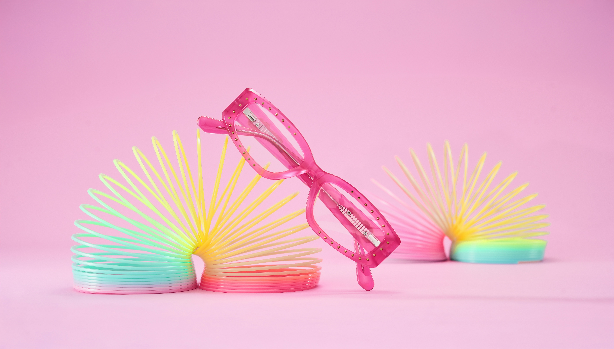
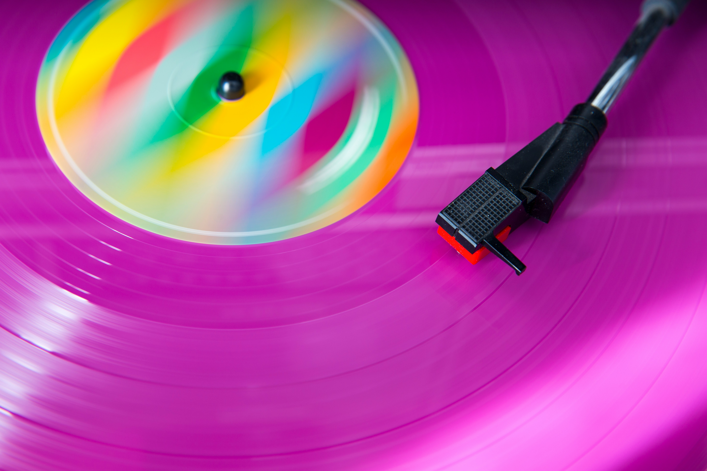

What is Baseline?
A signal from browser vendors and MDN indicating whether a feature is safe to use across all major browsers (Chrome, Edge, Firefox, Safari).
In all major browsers for 30+ months. Safe for any project.
Just landed in all major browsers. Usable today, but consider your support window.
Not yet supported in all major browsers. Use with caution or a fallback.
MDN marks every CSS property page with its current Baseline status. All slides in this deck are Baseline — either Newly or Widely Available.
Interop 2026
A yearly initiative by Apple, Google, Igalia, Microsoft, and Mozilla to improve cross-browser consistency. Each year they select focus areas and work together to fix real-world compatibility issues — this is the fifth year of the project.
CSS focus areas in 2026:
attr() CSS function
contrast-color() CSS function
Custom highlights
Scroll snap
shape() CSS function
zoom CSS property
Dialogs & popovers
Track progress at wpt.fyi/interop-2026 — 20 focus areas total in 2026.
Pseudo-class: :not()
Exclude elements from a selector — supports complex arguments.
- First item
- Second item
- Third item
- Last item (no border)
Pseudo-class: :is() / :where()
:is() takes the specificity of its most specific argument; :where() always has zero specificity.
Styled with :is()
Also :is()
:where(p) blue, then overridden to green
Styled by :where(p)
Pseudo-class: :has()
Select elements based on their contents or following siblings.

Card with image
Card without image
Pseudo-class: :nth-child(n of .selector)
Target the nth element matching a selector — filter :nth-child by class.
- Item 1
- Item 2 (highlight 1)
- Item 3 (highlight 2) ← targeted
- Item 4
- Item 5 (highlight 3)
Pseudo-class: :empty
Match elements that have no children, including no text nodes.
Pseudo-class: :focus-visible
Show focus styles only when keyboard-navigated, not on mouse click.
Pseudo-class: :user-valid / :user-invalid
Validate only after user interaction — avoids error styles on untouched fields.
At-rule: @layer
Define cascade layers to control specificity independent of source order.
Styled by cascade layers
At-rule: @scope
Scope styles to a subtree without high-specificity selectors. CSS Modules uses :global/:local for the same concept.
Inside card
This paragraph is navy.
Also inside card
Also navy.
Outside the card — not styled by @scope.
At-rule: @property
Register a custom property with a type, initial value, and inheritance — enables animating custom properties.
Property: logical sizing
Use flow-relative sizing instead of width and height.
Property: logical spacing
Use flow-relative margin, padding, and border shorthands.
Property: place-*
Shorthand for align-* and justify-* — set both axes at once.
Value: display: flow-root
Create a block formatting context — contains floats without clearfix hacks.
This text flows alongside the float.
Property: aspect-ratio
Specify an aspect ratio instead of setting explicit width and height values.
Value: fit-content
Size an element to its content, with optional max constraint.
Functions: min(), max(), clamp()
Constrain values with comparison functions — no media queries needed.
Functions: round(), abs(), sign(), trig
Newer math functions: step rounding, absolute values, sign extraction, and trig (sin(), cos(), tan(), …).
Rounded font size (2.7rem → nearest 0.5rem)
Pattern: center a shrink-wrapped element
Center an element without a hardcoded width using fit-content + margin-inline: auto.
Pattern: responsive grid, no media queries
Items wrap and fill automatically — min() prevents overflow on narrow containers.
Units: viewport units
Modern viewport units: dynamic (dvh), small (svh), large (lvh), and logical (vi, vb). On mobile, dvh updates as browser UI shows/hides; svh is always the smallest viewport; lvh always the largest.
Property: text-*
Dress up text decorations.
This is a text decoration example.
Property: hyphens
Control how words are broken across lines.
Incomprehensibilities and antidisestablishmentarianism are extraordinarily long words.
Property: text-wrap
Control how text wraps — balance line lengths or avoid orphans.
A heading with text that wraps unevenly at the end
Property: font-size-adjust
Normalize the apparent size of text across different fonts by matching x-height.
The quick brown fox jumps
The quick brown fox jumps
Function: color-mix()
Mix two colors in a chosen color space — the space changes the result.
Property: mask-image
Mask an element using a gradient or image.

Property: backdrop-filter
Apply graphical effects to the area behind an element.
Property: isolation
Create a new stacking context to contain blend modes.
Property: color-scheme
Tell the browser which color schemes an element supports.
Property: caret-color
Change the color of the text cursor in inputs and textareas.
Property: scrollbar-gutter
Reserve space for the scrollbar to prevent layout shift when it appears.
Line one of content
Line two of content
Line three of content
Line four of content
Line five of content
Line six of content
Property: scroll snap
Snap scroll positions to specific elements in a scrollable container.
Property: transition-behavior: allow-discrete
Transition discrete properties like display — previously impossible without JS.
At-rule: @starting-style
Define initial styles for enter transitions — enables CSS-only enter animations. Requires transition-behavior: allow-discrete.
At-rule: @container
Apply styles based on the container's size, not the viewport. Drag the container to resize.
Pattern: :has() + @container
Combine :has() for content-based queries with @container for size-based queries.
Card with image
Card without image